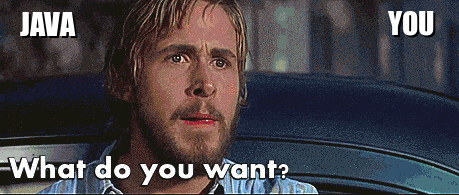

6.4. Returning Integers¶
{kind=link}
Java is the Ryan Gosling of programming languages and it needs you to explicitly name what you want. In order to do this, we’re going to need to memorize a few more keywords so that we can actually tell Java what we need our methods to do.
The first keyword we’re going to see today is int.

Pshhhh you already know this keyword; we used it to describe the type of value that is being stored within a variable. We’re going to use it again by adding it to any method definition that returns an integer. That is, we are going to give a specific value back to the method’s call statement.

Yeah, I know that’s kind of hard to picture in your mind. Take a look at the Actor class for a concrete example of what happens when a value is returned from a method.
As you can see, the Actor class contains the method getAge. This method returns the value stored within the attribute age. How do I know? Two things stand out to me:
The return type of this method is
int.The body of the method contains the word
return.

The return type int mentally prepares Java for what’s about to come and the word return names the specific value that will be given to the call statement. You can see this in action by running the statements in Main, which contain calls to the method getAge. Each of those calls eventually turns into 40 because that is the value that is stored in the attribute age for the rg object.
In general, any value or expression found to the right of return will be returned to the appropriate call statement. Don’t forget that expressions are always evaluated, so your computer will return the simplest version of an expression it can compute.
If the method returns something that is unexpected, Java is gunna get mad like Ryan Gosling and scream “WHAT DO YOU WANT?”. If only it were that romantic. :P Java will yell at you but it will phrase it as a compile-time error.
For example, I would produce a compile-time error if I were to define the method like so:
public int getAge(){
System.out.println(age);
}
Or like this,
public void getAge(){
return age;
}
The first method does not contain the word return in it, which is how Java knows that it needs to return a specific value from the method. This conflicts with the use of int for our return type, which told Java to expect a value to be returned in the first place. Don’t get Java’s hopes up by using the return type int and then never actually return an integer from your method!
The second method does contain the word return but it does not utilize a return type that suggests that a value will actually be produced. Remember, void tells Java that nothing will be returned from the method. So how can it have return in it? It can’t! One of those will have to change in order for Java to understand what you want.